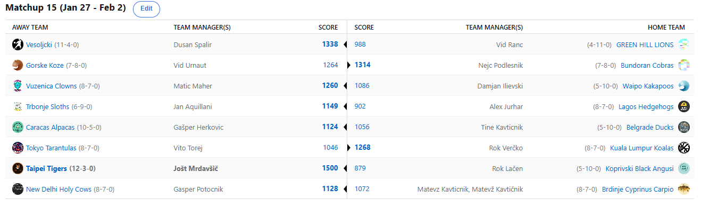

SEZONA 24/25
- Pravila in sistem tekmovanja
- Matchup1 (Oct 22 - Oct 27)
- Matchup2 (Oct 28 - Nov 3)
- Matchup3 (Nov 4 - Nov 10)
- Matchup4 (Nov 11 - Nov 17)
- Matchup5 (Nov 18 - Nov 24)
- Matchup6 (Nov 25 - Dec 1)
- Matchup7 (Dec 2 - Dec 8)
- Matchup8 (Dec 9 - Dec 15)
- Matchup9 (Dec 16 - Dec 22)
- Matchup10 (Dec 23 - Jan 29)
- Matchup11 (Dec 30 - Jan 5)
- Matchup12 (Jan 6 - Jan 12)
- Matchup13 (Jan 13 - Jan 19)
- Matchup14 (Jan 20 - Feb 26)
- Matchup15 (Jan 27 - Feb 2)
- Play-in (Feb 3 - Feb 23)
- Playoff 1 (Feb 24 - Mar 9)
- Playoff 2 (Mar 10 - Mar 23)
- Playoff 3 (Mar 24 - Apr 6)
2024/25 - Fantasy Koroška - sezona 8
MATCHUP 15 (Jan 27 - Feb 2)
Poročilo kroga
Po tem ko smo na šokanten način zaključili redni del fantasy sezone, ko je kot strela z jasnega udarila novica o Dončičevi selitvi v Lakerse, pa je zdaj čas, da se začne zares.
Še nekoliko manj verjeten kot tale trejd pa je bil zaključek v kar 6-way tiebreakerju na sredini lestvice, ki so ga naši analitiki skušali dešifrirati kot
Da Vincijevo šifro tako rekoč cel teden.
Toda več o tem kasneje, začnimo tale recap, za katerega že zdaj vemo, da bo maratonski lepo na začetku. Usoda je hotela, da se prav poetično v zadnjem krogu v medsebojnih dvobojih
merita obe moštvi s končnim BYE-jem proti obema moštvoma z GAJBO. Tako je zmagovalec rednega dela Jole v zadnjem krogu moral opraviti z Vokanovimi Angusi.
Za svojo 8. zaporedno zmago, s čimer je izenačil rekord, ki ga je prej v sezoni postavil Špalir, se ni pretirano namučil. Poldrugi tisočak točk in še 5. najboljši
score v zadnjih 7 tednih sta bila dovolj za rutinirano zmago. S tem si je Jole še drugič zapored priigral laskavi naziv najboljšega po rednem delu in prijetnih 20€.
Lačenovski je s tem klavrno zaključil sezono, ki jo bo zaključil na 15. ali 16. mestu. Seveda pa Voka ni mogel iz svoje kože in je očitno Jaxsona Hayesa zamenjal za
igralni avtomat v Mondu. Rekorden znesek je poletel proti temu Anthonyju Davisu s Temuja in ali bo Hayes karkoli pomagal Donkeju, bomo še videli. Vsekakor
ne bo pomagal nič Lačnu, ki je zdaj v procesu čakanja na akcijske cene Landgrafa in si bo najbrž moral sposoditi kakšen tovornjak, da poleg vse kuharske opreme,
h Krevhu pritovori še gajbo.
Tudi drugi BYE-jevec Dule se je tako rekoč sprehodil do nove zmage. Edino, za kar je ta teden trepetal je bil njegov weekly rekord, ki ga je s 1532 točkami postavil v 7. tednu.
Na koncu je Joletu vendarle zmanjkalo nekaj malega in tako si je Špalir priigral 10€ za ta rekord, kot tudi 10€ za drugo mesto po rednem delu. Sezona je zanj
finančno pokrita in bo vsaj lažji obliž na rano, v kolikor se za Mr. Rukolo tudi tokrat playoff izkaže za 19. sezono Grey's Anatomy. Kaj na drugi strani reči za Ranaca?
Vstop med velike fante in tole hudo konkurenco je bil vsekakor velik korak naprej in če bi mu »frend« Tajn kaj prej razložil princip IR-ja in FA marketa, bi morda celo
dosegel kaj več. Tudi dve dolgoročni poškodbi nikakor nista pomagali in Vid krstno sezono sklepa na zadnjem, 16. mestu. Vaja dela mojstra pravijo in vsekakor računamo,
da bo Ranac drugo leto nazaj močnejši, with something to prove, do takrat pa …. Js sem za Laško.
Tretje mesto je vendarle na pozitiven način, z zmago, zasigural Herko. Po težkem slovesu od Jalena Johnsona je kakopak hudič imel mlade in Alpake so začele pestiti poškodbe. Tudi tale uvod
v play-in kar se injury reporta tiče nikakor ni pozitiven za Gašperja, a vendarle je izhodišče dovolj dobro, da bi moral upravičiti vlogo favorita. Se bo pa po nekem
naključju znova pomeril z istim tekmecem kot v zadnjem krogu – Tajnom. Mali outrdrinkerček Tine bo moral vsekakor pokazati več resnosti, v stari Grčiji so za pozabljeno
postavo v času playoffa baje sekali roke in tudi vodstvo naše lige razmišlja o takšnih ukrepih. Tole je bil šele prvi medsebojni obračun, v katerem je bil uspešnejši Herko,
kar je vsekakor presenečenje in zelo nas zanima, ali lahko ostane trn v peti preteklemu zmagovalcu Tajn tudi tokrat.
Matic Maher je sezono sklenil na 4. mestu. Ne, to ni prvoaprilska šala in čeprav tudi mi ne moremo prav verjeti, kako je do tega prišlo, smo po tihem prav privoščili Maticu. Tradicionalni
gajbar je tokrat naziv predal naprej in ne samo to, tokrat je pred začetkom končnice celo strah in trepet in vse kaže, da bo to njegova daleč najboljša sezona, že od
tiste davne 2019/20, ki jo je sklenil na stopničkah. Tudi on pa se bo ironično še enkrat pomeril s tokratnim nasprotnikom – Iljo. Drugi rookie je vendarle splezal iz
rdeče cone in se uvrstil v končnico, kjer pa ga čaka noro težka naloga. Ena izmed bolj in-form ekip lige bo po prisilnem dropu Dejonteja Murrayja vsekakor še nekoliko
težji zalogaj, ampak pretkani Dili še ni rekel zadnje in čeprav mu stavnice pripisujejo minimalne možnosti, ga še ne bi tako hitro odpisali. Maher je bil na podlagi
največ total pointsov rangiran najvišje v tem zelo zanimivem krogu kar 6 ekip, ki so se zvrstile od 4. do 9. mesta.
Edini Slovenec, ki bo januarja 2025 (verjetno) šel v Dallas, Rok Verčko, je naslednji v tisti kategoriji, saj ni res pa je, kar se tiče uvrstitve v rednem delu. Hja, Jokara je le Jokara
in z njim v moštvu nisi nikoli odpisan. Prvi pick se je izkazal za izjemno prednost in Lapati to s pridom izkorišča. Tokrat je bil boljši od Vita Toreja in si s tem
priigral izvrstno 5. mesto. Na podlagi H2H recorda je bil uspešnejši od preostalih managerjev s po 8 zmagami in zdaj ga čaka obračun s Kupsom v play-inu. Po tem ko je
najnovejšega Mavericka Davisa izgubil za kratek čas, pa je Vito nekako izgubil tudi upanje za zmago v tem matchupu. Ptički so sicer čivkali o namernem porazu v želji
po boljšem razporedu, a dokazi o čem takem ne obstajajo. Pa tudi če bi, gre za legitimno strategijo, ki pa je nikakor ne bi pripisali novincu v ligi. Lahko v slogu
Vranov z Vranskega ujame pravo formo ravno ob pravem času in začne nizati zmage tik pred koncem?
Kdor visoko leta, nizko pade pravijo. Vsekakor izjemno primeren pregovor za našega Matona. Po izvrstnem štartu, ko je sezono otvoril s kar 7-0, so se začele kopičiti težave in Kavt je
padel vse do #7 seeda. V drugi polovici sezone je zbral vsega 1 zmago in kar 7 porazov in če Karma obstaja, se bi moral zdaj zelo zelo zelo bati Bundoranskih Kobr,
kjer nastopa Joel Embiid, ki ga je Kavt zbodel večkrat kot senatorji Julija Cezarja. Kamerunski orjak baje že čaka na svoje maščevanje in če ne bo jokcal ob zatečenem
kolenu, bi kaj lahko pokončal sanje Brdinjskih Krapov. V zadnjem krogu rednega dela mu je nasproti stal Geps, ki si je s to zmago priigral 9. mesto po rednem delu.
Ali lahko Geps postane šele prvi v zgodovini, ki mu je v zaporednih tednih uspelo v kozji rog ugnati top2 osovraženčka lige, Kavta in Freda?
Prav slednji ga namreč čaka v play-in rundi letošnje končnice, po tem ko je v zadnjem krogu klonil proti Kupsu in s tem padel na 8. mesto. Za Aleksa trade deadline in s tem razrešitev
Butler sage kar ne more priti dovolj hitro in le upa lahko, da mu do tedaj Geps ne bo preveč ušel. 2x zmagovalec AJHEAT se je sicer pozicioniral na arguably najbolj
Neugodno mesto v bracketu, ko ga v primeru uspeha čaka Jole. Zapriseženi pečenica lover Aleks zdaj že kuje strategijo in videli bomo, ali mu bodo
zadnji dnevi pred trade deadlinom šli na roko. Jan Kupljen, ki je sezono sklenil na 12. mestu je v zadnjem tednu blago rečeno izdominiral Freda in
se z izvrstno popotnico odpravlja v play-in, kjer ga čaka Verčko. Je pa res, da je tudi AC Milan šel v sodniški podaljšek derbija, pa se je le-ta
vendarle klavrno končal zanje. Lahko Lenivci bolje ustavijo Jokiča, kot pa so rossonerri zaustavili de Vrija?
Ostal nam je le še obračun med Kobrami in Kozami. Po tem ko je prevzel zadnje mesto v predictionih in si tam zadal cilj splezati vse do zelene cone, pa je Vid nekoliko
višje vsaj na lestvici lige. Zaključil je na 11. mestu in ga zdaj v play-inu čaka Vito. V zadnjem krogu bi mu morebitna zmaga lahko prinesla v nekaterih
scenarijih celo 5. mesto, a žal je bil prekratek v dvoboju s Cickom in njegovo izhodišče se je znatno poslabšalo. Se ga bo Ingram vendarle usmilil in se vrnil pravočasno,
da mu pomaga do četrtfinala? Kaj reči na drugi strani za aktualnega prvaka Cicka? Komaj se je izvlekel v playoff, po tem ko so njegovi % bili že krepko pod 50
in zdaj ima že kar v prvi rundi možnost zapreti kljun Kavtu. CIAcko bo vsekakor pred izjemno težko nalogo, da kot drugi v zgodovini obrani naslov prvaka,
a vsekakor ta potopani odbojkarski strateg ne bo odnehal, dokler obstaja kakršnakoli možnost po uspehu, o čemer priča tudi podatek, da je v rednem delu storil
kar 49 potez s svojo ekipco, kar je kar 10 več od naslednjega zasledovalca.
Tale epski recap zaključujemo še s povzetkom napovedi –
2x prvak Fred pričakuje Gepsa in Butlerjevo odločitev, visokoleteči Klovni, ki končno niso predmet posmeha so velik favorit v dvoboju s Kakapoji. Verčko in njegove
Koale polagajo vse upe na (k sreči ogromna) pleča Nikole Jokiča pred obračunom s Kupsom, najuspešnejši novinec Vito bo poskušal pičiti Koze. Obračun
najdaljših jezikov pričakujemo med Cickom in Kavtom, trenutno precej oslabljeni Herko, pa bo poskušal preprečiti polet Račkam, ki znajo biti ob
povratku motiviranega Dončiča precej nevarnejše.
Ne pozabite na predictione, ki prinašajo x1.5 točk in imajo kar 5 bonusov in pa seveda srečno vsem.